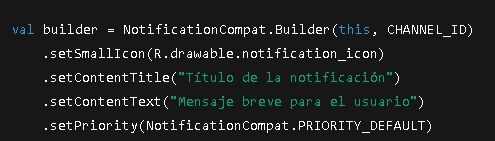

Las aplicaciones móviles suelen necesitar tareas en segundo plano y mecanismos de comunicación con el usuario (notificaciones). Android ofrece la clase Service para ejecutar trabajo sin bloqueos de la interfaz, y componentes de Jetpack como WorkManager para programar tareas garantizadas. Por ejemplo, un IntentService (ahora en desuso, pero ilustrativo) “proporciona una estructura sencilla para ejecutar operaciones de larga duración en un único hilo en segundo plano sin afectar la IU” . Sin embargo, en la actualidad se recomienda usar WorkManager: “es un componente de Android Jetpack para trabajos en segundo plano que requieren una ejecución tanto oportuna como garantizada” . WorkManager se encarga de programar tareas periódicas o retrasadas, las ejecuta incluso si la app se cierra y respeta las condiciones (carga de CPU, conectividad, etc.) definidas por el desarrollador. Otros mecanismos son JobScheduler o servicios en primer plano, pero WorkManager simplifica la gestión unificando múltiples casos de uso.
Las notificaciones informan al usuario de eventos relevantes mientras la app puede estar en segundo plano. En Android, se construyen usando NotificationCompat.Builder. Por ejemplo, una notificación básica incluye un ícono, un título y un breve texto developer.android.com . El siguiente fragmento ilustra la creación típica:
Para compartir datos entre apps en Android se usan los Content Providers (proveedores de contenido). Un proveedor de contenido expone un repositorio de datos (por ejemplo, una base de datos SQLite) a otras apps mediante una interfaz común. Como describe la documentación, “un proveedor de contenido administra el acceso a un repositorio central de datos, exponiéndolos como una o más tablas similares a las de una base de datos relacional” . Otros componentes de la app (o apps externas) pueden acceder a esos datos usando un ContentResolver, que realiza operaciones CRUD estándar (crear, leer, actualizar, borrar) sobre el proveedor .
Muchas apps móviles actuales dependen de servicios en la nube para el backend. La computación en la nube para móviles (Mobile Cloud Computing) es “el método que utiliza la tecnología en la nube para ofrecer aplicaciones móviles” . En la práctica, la app móvil envía y recupera datos (bases de datos, archivos, autenticación, etc.) a servidores remotos en la nube. Esto permite a la aplicación delegar tareas pesadas (procesamiento, almacenamiento, escalado) al backend, reduciendo la carga local del dispositivo . Por ejemplo, plataformas como Firebase ofrecen base de datos en tiempo real en la nube, autenticación de usuarios, mensajería push y otras funciones listas para usar . En concreto, Firebase es “una plataforma de desarrollo de aplicaciones móviles de Google con potentes funciones para desarrollar, gestionar y mejorar aplicaciones” . Sus servicios (BD en tiempo real, Cloud Functions, hosting, push notifications, etc.) están alojados en Google Cloud, lo que facilita la escalabilidad bajo demanda . Otros ejemplos son AWS Amplify o Azure Mobile Apps, que ofrecen backend escalables, APIs y almacenamiento para apps móviles. En resumen, los servicios en la nube permiten que la app móvil se concentre en la interfaz y la experiencia de usuario, mientras los datos y la lógica pesada residen en servidores externos .
← Regresar al index